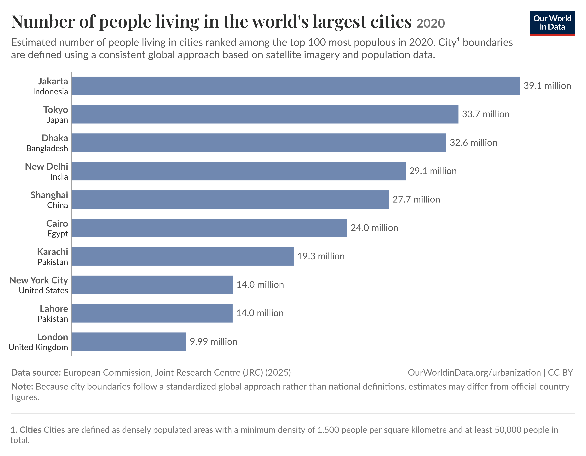

PP434 Portfolio Tasks
CC1: Hosting and Displaying Charts
The first task for building a portfolio of charts is to understand building a live site using GitHub. To explore adding charts to the site, we used VegaEmbed to display charts. Explore the first charts below!
Chart 1: GDP and Life Expectancy
We've organised the page into sections, with each section containing a chart, title and a description. Here, we can describe the chart and give some context. As a first example, we're using a basic chart from our repo.
Chart 2: Food Emissions
We've organised the page into sections, with each section containing a chart, title and a description. Here, we can describe the chart and give some context. As a first example, we're using a basic chart from our repo.
CC2: Building Charts
This section explores building my own charts using the Economics Observatory Data hub.
Chart 3: USA Population Growth
We've organised the page into sections, with each section containing a chart, title and a description. Here, we can describe the chart and give some context. As a first example, we're using a basic chart from our repo.
Chart 4: Great Britian Government Investment
We've organised the page into sections, with each section containing a chart, title and a description. Here, we can describe the chart and give some context. As a first example, we're using a basic chart from our repo.
CC3: Policy Debate
The policy topic I decided to focus on for this section relates to mental health disorders and substance abuse. Very often, those with mental health disorders are prone to substance abuse issues. Some may argue that policy should account for these issues in combination with one another to more effecitvely combat substance abuse and mental health disorders.
Chart 5: Drug Use and Mental Health Disorders
This chart explores how more likely drug dependency is given a specific mental health disorder. We can see that the increased risk of drug dependency is at minimum one, and maximum over six times higher for mental health conditions. The data here would suggest that it is important to tackle a drug dependency crisis in combination with mental health policy.
Chart 6: Exploring Death Rates
The figure demonstrates that death rates for substance abuse and mental health disorders are much higher in North America and Europe than other regions. This suggests that these regions may benefit even more from a policy approach that tackles the issues together, as they have real societal impacts.
CC4: Replication
The fourth task is to replicate and improve an existing chart from a policy organization, journalist, think tank, or similar entity.
The chart below is from Our World in Data. It depicts the population of some of the world's largest cities in 2020.

Chart 7: Replication
I have replicated the chart from Our World in Data using VegaLite.
Chart 8: Recreation
To improve the chart, the biggest change I made was to the x axis. Instead of displaying the population as a number next to each bar, I instead display population in millions along the x axis in steps of 5 million. Additionally, a vertical grid helps the viewer see where each city falls on the x axis. I also increased the spacing between bars as well as between the titles and the data to improve overall readability of the chart, as I felt the original was slightly cluttered. Finally, I added a tooltip so the user may hover over a bar and see the exact population number if they wish to know.